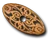
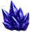
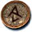
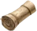
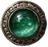

Heyday

Wraith Brand
Small Charm
Required Level: 1
+5% Faster Run/Walk Speed
+3 to Maximum Damage
+20 to Attack Rating
Unique Small Charm
Wraith Brand
Carry only one.
- Type
- Small Charm
- Base
- Small Charm
- Required level
- 1
- Item level
- 30
Other unique Small Charms

Annihiluslevel 75
Autumn's Avatarlevel 12
Remembrance of Glorylevel 80
Argo's Anchorlevel 48- Peacemakerlevel 15
- Collin's Lesser Mightlevel 1
- Collin's Minor Mightlevel 10
- Collin's Mightlevel 20
- Collin's Greater Mightlevel 30
- Collin's Furylevel 40
- Collin's Empowered Furylevel 50
- Collin's Devastationlevel 60